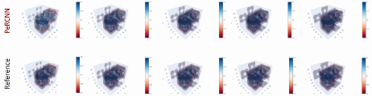

PeRCNN for 3D Reaction-Diffusion Equation


Overview
PDE equations occupy an important position in the modeling of physical systems. But many underlying PDEs have not yet been fully explored in epidemiology, meteorological science, fluid mechanics, and biology. However, for those known PDE equations, such as Naiver-Stokes equations, the exact numerical calculation of these equations requires huge computing power, which hinders the application of numerical simulation in large-scale systems. Recently, advances in machine learning provide a new way for PDE solution and inversion.
Recently, Huawei and Professor Sun Hao’s team from Renmin University of China proposed Physics-encoded Recurrent Convolutional Neural Network, PeRCNN(https://www.nature.com/articles/s42256-023-00685-7) based on Ascend platform and MindSpore. Compared with physical information neural network, ConvLSTM, PDE-NET and other methods, generalization and noise resistance of PeRCNN are significantly improved. The long-term prediction accuracy is improved by more than 10 times. This method has broad application prospects in aerospace, shipbuilding, weather forecasting and other fields. The results have been published in nature machine intelligence.
Problem Description
Reaction-diffusion equation is a partial derivative equation that is of great significance and has been broadly used in a variety of disciplines such as physics, chemistry and biology.
Governing Equation
In this research, RD equation is formulated as follow:
where,
In this case, we will simulate the flow dynamics in 100 time steps (dt=0.5s) in a $ \Omega `:nbsphinx-math:times :nbsphinx-math:tau = {[-50,50]}^3 :nbsphinx-math:times [0,500] `$ physical domain. The initial condition of the problem would go through gaussian noise and periodic BC is adpoted.
Technology Path
MindSpore Flow solves the problem as follows:
Optimizer and One-step Training
Model Construction
Model training
Model Evaluation and Visualization.
[1]:
import os
import sys
import time
import numpy as np
[2]:
from mindspore import context, jit, nn, ops, save_checkpoint, set_seed
import mindspore.common.dtype as mstype
from mindflow.utils import load_yaml_config, print_log
from src import RecurrentCnn, post_process, Trainer, UpScaler, count_params
[3]:
set_seed(123456)
np.random.seed(123456)
context.set_context(mode=context.GRAPH_MODE, device_target="GPU", device_id=0)
Optimizer and One-step Training
[4]:
def train_stage(trainer, stage, config, ckpt_dir, use_ascend):
"""train stage"""
if use_ascend:
from mindspore.amp import DynamicLossScaler, all_finite
loss_scaler = DynamicLossScaler(2**10, 2, 100)
if 'milestone_num' in config.keys():
milestone = list([(config['epochs']//config['milestone_num'])*(i + 1)
for i in range(config['milestone_num'])])
learning_rate = config['learning_rate']
lr = float(config['learning_rate'])*np.array(list([config['gamma']
** i for i in range(config['milestone_num'])]))
learning_rate = nn.piecewise_constant_lr(milestone, list(lr))
else:
learning_rate = config['learning_rate']
if stage == 'pretrain':
params = trainer.upconv.trainable_params()
else:
params = trainer.upconv.trainable_params() + trainer.recurrent_cnn.trainable_params()
optimizer = nn.Adam(params, learning_rate=learning_rate)
def forward_fn():
if stage == 'pretrain':
loss = trainer.get_ic_loss()
else:
loss = trainer.get_loss()
if use_ascend:
loss = loss_scaler.scale(loss)
return loss
if stage == 'pretrain':
grad_fn = ops.value_and_grad(forward_fn, None, params, has_aux=False)
else:
grad_fn = ops.value_and_grad(forward_fn, None, params, has_aux=True)
@jit
def train_step():
loss, grads = grad_fn()
if use_ascend:
loss = loss_scaler.unscale(loss)
is_finite = all_finite(grads)
if is_finite:
grads = loss_scaler.unscale(grads)
loss = ops.depend(loss, optimizer(grads))
loss_scaler.adjust(is_finite)
else:
loss = ops.depend(loss, optimizer(grads))
return loss
best_loss = sys.maxsize
for epoch in range(1, 1 + config['epochs']):
time_beg = time.time()
trainer.upconv.set_train(True)
trainer.recurrent_cnn.set_train(True)
if stage == 'pretrain':
step_train_loss = train_step()
print_log(
f"epoch: {epoch} train loss: {step_train_loss} epoch time: {(time.time() - time_beg) :.3f} s")
else:
if epoch == 3800:
break
epoch_loss, loss_data, loss_ic, loss_phy, loss_valid = train_step()
print_log(f"epoch: {epoch} train loss: {epoch_loss} ic_loss: {loss_ic} data_loss: {loss_data} \
phy_loss: {loss_phy} valid_loss: {loss_valid} epoch time: {(time.time() - time_beg): .3f} s")
if epoch_loss < best_loss:
best_loss = epoch_loss
print_log('best loss', best_loss, 'save model')
save_checkpoint(trainer.upconv, os.path.join(ckpt_dir, "train_upconv.ckpt"))
save_checkpoint(trainer.recurrent_cnn,
os.path.join(ckpt_dir, "train_recurrent_cnn.ckpt"))
Model Construction
PeRCNN is composed of two networks which are UpSclaer for upscaling and recurrent CNN as a backbone.
[5]:
def train():
"""train"""
rd_config = load_yaml_config('./configs/percnn_3d_rd.yaml')
data_config = rd_config['data']
optim_config = rd_config['optimizer']
summary_config = rd_config['summary']
model_config = rd_config['model']
use_ascend = context.get_context(attr_key='device_target') == "Ascend"
print_log(f"use_ascend: {use_ascend}")
if use_ascend:
compute_dtype = mstype.float16
else:
compute_dtype = mstype.float32
upconv_config = model_config['upconv']
upconv = UpScaler(in_channels=upconv_config['in_channel'],
out_channels=upconv_config['out_channel'],
hidden_channels=upconv_config['hidden_channel'],
kernel_size=upconv_config['kernel_size'],
stride=upconv_config['stride'],
has_bais=True)
if use_ascend:
from mindspore.amp import auto_mixed_precision
auto_mixed_precision(upconv, 'O1')
rcnn_config = model_config['rcnn']
recurrent_cnn = RecurrentCnn(input_channels=rcnn_config['in_channel'],
hidden_channels=rcnn_config['hidden_channel'],
kernel_size=rcnn_config['kernel_size'],
stride=rcnn_config['stride'],
compute_dtype=compute_dtype)
percnn_trainer = Trainer(upconv=upconv,
recurrent_cnn=recurrent_cnn,
timesteps_for_train=data_config['rollout_steps'],
dx=data_config['dx'],
grid_size=data_config['grid_size'],
dt=data_config['dt'],
mu=data_config['mu'],
data_path=data_config['data_path'],
compute_dtype=compute_dtype)
total_params = int(count_params(upconv.trainable_params()) +
count_params(recurrent_cnn.trainable_params()))
print(f"There are {total_params} parameters")
ckpt_dir = summary_config["ckpt_dir"]
fig_path = summary_config["fig_save_path"]
if not os.path.exists(ckpt_dir):
os.makedirs(ckpt_dir)
train_stage(percnn_trainer, 'pretrain',
optim_config['pretrain'], ckpt_dir, use_ascend)
train_stage(percnn_trainer, 'finetune',
optim_config['finetune'], ckpt_dir, use_ascend)
output = percnn_trainer.get_output(100).asnumpy()
output = np.transpose(output, (1, 0, 2, 3, 4))[:, :-1:10]
print('output shape is ', output.shape)
for i in range(0, 10, 2):
post_process(output[0, i], fig_path, is_u=True, num=i)
Model Training
With MindSpore version >= 2.0.0, we can use the functional programming for training neural networks.
[ ]:
train()
use_ascend: False
shape of uv is (3001, 2, 48, 48, 48)
shape of ic is (1, 2, 48, 48, 48)
shape of init_state_low is (1, 2, 24, 24, 24)
There are 10078 parameters
epoch: 1 train loss: 0.160835 epoch time: 5.545 s
epoch: 2 train loss: 104.36749 epoch time: 0.010 s
epoch: 3 train loss: 4.3207517 epoch time: 0.009 s
epoch: 4 train loss: 8.491383 epoch time: 0.009 s
epoch: 5 train loss: 23.683647 epoch time: 0.009 s
epoch: 6 train loss: 23.857117 epoch time: 0.010 s
epoch: 7 train loss: 16.037672 epoch time: 0.010 s
epoch: 8 train loss: 8.406443 epoch time: 0.009 s
epoch: 9 train loss: 3.527469 epoch time: 0.020 s
epoch: 10 train loss: 1.0823832 epoch time: 0.009 s
...
epoch: 9990 train loss: 8.7615306e-05 epoch time: 0.008 s
epoch: 9991 train loss: 8.76504e-05 epoch time: 0.008 s
epoch: 9992 train loss: 8.761823e-05 epoch time: 0.008 s
epoch: 9993 train loss: 8.7546505e-05 epoch time: 0.008 s
epoch: 9994 train loss: 8.7519744e-05 epoch time: 0.008 s
epoch: 9995 train loss: 8.753734e-05 epoch time: 0.008 s
epoch: 9996 train loss: 8.753101e-05 epoch time: 0.008 s
epoch: 9997 train loss: 8.748294e-05 epoch time: 0.008 s
epoch: 9998 train loss: 8.7443106e-05 epoch time: 0.008 s
epoch: 9999 train loss: 8.743979e-05 epoch time: 0.008 s
epoch: 10000 train loss: 8.744074e-05 epoch time: 0.008 s
epoch: 1 train loss: 61.754555 ic_loss: 8.7413886e-05 data_loss: 6.1754117 phy_loss: 2.6047118 valid_loss: 7.221066 truth_loss: 2.7125626 epoch time: 138.495 s
best loss 61.754555 save model
epoch: 2 train loss: 54.79151 ic_loss: 0.32984126 data_loss: 5.3142304 phy_loss: 52.50226 valid_loss: 6.812231 truth_loss: 2.7744124 epoch time: 1.342 s
best loss 54.79151 save model
epoch: 3 train loss: 46.904842 ic_loss: 0.12049961 data_loss: 4.6302347 phy_loss: 32.494545 valid_loss: 5.953037 truth_loss: 2.579268 epoch time: 1.262 s
best loss 46.904842 save model
epoch: 4 train loss: 40.674736 ic_loss: 0.031907484 data_loss: 4.05152 phy_loss: 11.360751 valid_loss: 5.08032 truth_loss: 2.3503494 epoch time: 1.233 s
best loss 40.674736 save model
epoch: 5 train loss: 36.910408 ic_loss: 0.10554239 data_loss: 3.6382694 phy_loss: 3.5776496 valid_loss: 4.4271708 truth_loss: 2.1671412 epoch time: 1.315 s
best loss 36.910408 save model
epoch: 6 train loss: 33.767193 ic_loss: 0.14396289 data_loss: 3.304738 phy_loss: 1.4308721 valid_loss: 3.954126 truth_loss: 2.0307255 epoch time: 1.322 s
best loss 33.767193 save model
epoch: 7 train loss: 30.495178 ic_loss: 0.09850004 data_loss: 3.0002677 phy_loss: 0.8241035 valid_loss: 3.586939 truth_loss: 1.9244627 epoch time: 1.178 s
best loss 30.495178 save model
epoch: 8 train loss: 27.448381 ic_loss: 0.03362463 data_loss: 2.728026 phy_loss: 0.6343211 valid_loss: 3.286183 truth_loss: 1.8369334 epoch time: 1.271 s
best loss 27.448381 save model
epoch: 9 train loss: 24.990078 ic_loss: 0.0024543565 data_loss: 2.4977806 phy_loss: 0.5740176 valid_loss: 3.0332325 truth_loss: 1.7619449 epoch time: 1.573 s
best loss 24.990078 save model
epoch: 10 train loss: 23.15583 ic_loss: 0.014634784 data_loss: 2.3082657 phy_loss: 0.5407104 valid_loss: 2.8156128 truth_loss: 1.6955423 epoch time: 1.351 s
best loss 23.15583 save model
...
epoch: 1657 train loss: 0.092819184 ic_loss: 0.00065381714 data_loss: 0.00895501 phy_loss: 0.00069560105 valid_loss: 0.011931514 truth_loss: 0.16052744 epoch time: 1.174 s
best loss 0.092819184 save model
epoch: 1658 train loss: 0.09269943 ic_loss: 0.0006537079 data_loss: 0.008943089 phy_loss: 0.0006945693 valid_loss: 0.011916851 truth_loss: 0.1604548 epoch time: 1.296 s
best loss 0.09269943 save model
epoch: 1659 train loss: 0.092579775 ic_loss: 0.00065359805 data_loss: 0.008931179 phy_loss: 0.0006935386 valid_loss: 0.0119022 truth_loss: 0.16038223 epoch time: 1.426 s
best loss 0.092579775 save model
epoch: 1660 train loss: 0.09246021 ic_loss: 0.0006534874 data_loss: 0.008919277 phy_loss: 0.00069250836 valid_loss: 0.011887563 truth_loss: 0.16030973 epoch time: 1.389 s
best loss 0.09246021 save model
Model Evaluation and Visualization
After training, all data points in the flow field can be inferred. And related results can be visualized.
